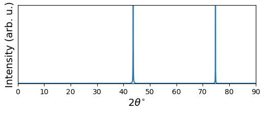
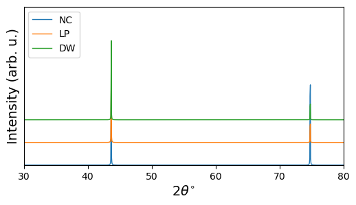
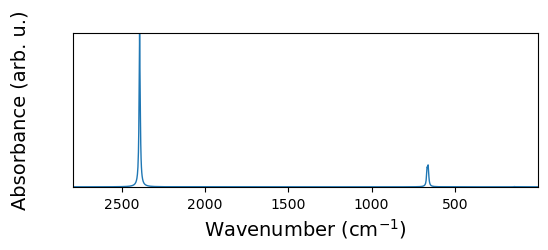
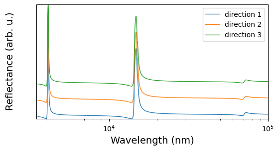
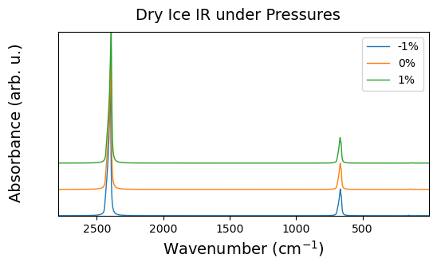
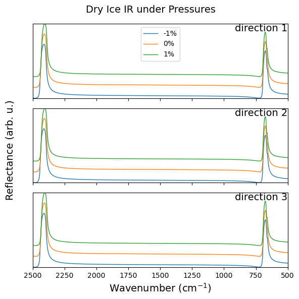
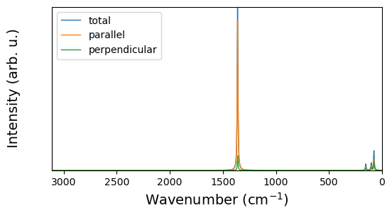
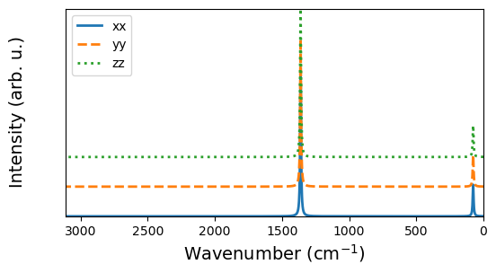
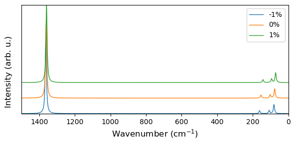
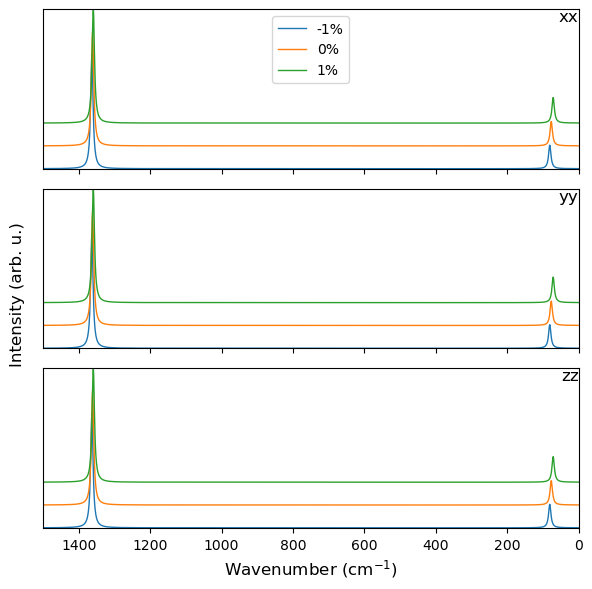

Spectra
Here code examples for spectra visualization and analysis is given.
XRD spectra
This part discusses how the code deal with the output by the ‘XRDSPEC’ keyword of ‘properties’ calculation.
The ‘read_XRDspec’ method
The read_XRDspec() method is defined in crystal_io.Properties_output classes, which requires the standard screen output by CRYSTAL.
With option='LP', the XRD spectra with Lorentz and polarization effects is read.
[1]:
from CRYSTALpytools.crystal_io import Properties_output
pout = Properties_output('spec_diamondXRD.out').read_XRDspec(option='LP')
print('Type : {}'.format(type(pout)))
print('N 2theta : {:d}'.format(pout.theta.shape[0]))
Type : <class 'CRYSTALpytools.spectra.XRD'>
N 2theta : 2000
The ‘XRD’ class
The spectra.XRD class is defined for XRD spectra, which enables quick instantiation and visualization.
[2]:
from CRYSTALpytools.spectra import XRD
fig = XRD.from_file('spec_diamondXRD.out').plot(theta_range=[0, 90], figsize=[6, 2])

The ‘plot_XRD’ function
The plot.plot_XRD() function, similar to other cases, enables comparison among different systems or spectra. The plot setups are similar to plot_electron_doss or plot_transport_tensor.
As an example, the XRD spectra obtained with different methods are compared. Use shift to control the distance between spectra. The maximum intensity of all spectra is normalized to 100, which is not changable.
[3]:
from CRYSTALpytools.plot import plot_XRD
from CRYSTALpytools.spectra import XRD
obj1 = XRD.from_file('spec_diamondXRD.out', option='NC')
obj2 = XRD.from_file('spec_diamondXRD.out', option='LP')
obj3 = XRD.from_file('spec_diamondXRD.out', option='DW')
fig = plot_XRD(obj1, obj2, obj3, label=['NC', 'LP', 'DW'], shift=20,
figsize=[6, 3], theta_range=[30, 80], legend='upper left')

IR spectra
This part discusses how the code deal with the infrared spectra from harmonic phonon calculations.
NOTE
Currently, methods are developed for IR absorbance and reflectance spectra only (i.e., IRSPEC.DAT). Not available for refractive index (IRREFR.DAT) or dielectric function (IRDIEL.DAT). Though, in principle, the samiliar file format is followed and can be visualized if the user tunes parameters carefully.
The ‘get_spectra’ method
The get_spectra() method is defined in crystal_io.Crystal_output classes, which requires the ‘IRSPEC.DAT’ data by CRYSTAL.
Get a spectra.IR object with type='IRSPEC' or type='infer' (default, filename must contain ‘IRSPEC’). Though currently the screen output is not required, having one during instantiation will let the code to check if the spectrum file matches the output file.
Frequency unit used for the object is cm\(^{-1}\).
[4]:
from CRYSTALpytools.crystal_io import Crystal_output
ir = Crystal_output('spec_dryIceIR.out').get_spectra('spec_dryIceIR.IRSPEC')
print('Frequency Unit: {}'.format(ir.unit))
print('Length of frequency: {:d}'.format(len(ir.frequency)))
print('Number of inequivalent directions of reflectance spectra: {:d}'.format(
len(ir.reflectance)
))
Frequency Unit: cm-1
Length of frequency: 2794
Number of inequivalent directions of reflectance spectra: 3
The ‘IR’ class
The spectra.IR class is defined for IR spectra, which enables quick instantiation and visualization.
Plot the IR absorbance spectrum with the default Lorentzian-Gaussian broadening.
[5]:
from CRYSTALpytools.spectra import IR
obj = IR.from_file('spec_dryIceIR.IRSPEC', output='spec_dryIceIR.out')
fig = obj.plot(unit='cm-1', option='LG', figsize=[6, 2])

Plot the IR reflectance spectra along all the inequivalent directions. Plot wavelength with unit='nm'.
[6]:
from CRYSTALpytools.spectra import IR
obj = IR.from_file('spec_dryIceIR.IRSPEC', output='spec_dryIceIR.out')
fig = obj.plot(unit='nm', option='REFL', figsize=[6, 3], shift=20,
x_range=[3.5e3, 1e5], label='direction', legend='upper right')

The ‘plot_IR’ function
The plot.plot_IR() function, similar to other cases, enables comparison among different systems and spectra. The plot setups are similar to plot_electron_doss or plot_transport_tensor.
IR spectra by Voigt broadening of dry ice under -1%, 0% and 1% strains are plotted. The maximum intensity of all spectra is normalized to 100, which is not changable.
[7]:
from CRYSTALpytools.plot import plot_IR
fig = plot_IR('spec_dryIceS-1IR.IRSPEC', 'spec_dryIceIR.IRSPEC', 'spec_dryIceS1IR.IRSPEC',
option='V', shift=20, legend='upper right', label=['-1%', '0%', '1%'],
title='Dry Ice IR under Pressures', figsize=[6,3])
/home/huanyu/apps/anaconda3/envs/crystal_py3.9/lib/python3.9/site-packages/CRYSTALpytools/spectra.py:115: UserWarning: Output file not available. Geometry information missing.
return Crystal_output(output).get_spectra(specfile, 'IRSPEC')

Multi-panel plotting is enabled for reflectance spectra. NDirection*1 subplots are generated.
[8]:
from CRYSTALpytools.plot import plot_IR
fig = plot_IR('spec_dryIceS-1IR.IRSPEC', 'spec_dryIceIR.IRSPEC', 'spec_dryIceS1IR.IRSPEC',
option='REFL', shift=20, legend='upper center', label=['-1%', '0%', '1%'],
title='Dry Ice IR under Pressures', figsize=[6,6], x_range=[500, 2500])

Raman spectra
This part discusses how the code deal with the Raman spectra from harmonic phonon calculations, which is similar to IR spectra.
The ‘get_spectra’ method
The same method is used for IR and Raman spectra.
[9]:
from CRYSTALpytools.crystal_io import Crystal_output
ra = Crystal_output('spec_dryIceRaman.out').get_spectra('spec_dryIceRaman.RAMSPEC')
print('Frequency Unit: {}'.format(ra.unit))
print('Length of frequency: {:d}'.format(len(ra.frequency)))
Frequency Unit: cm-1
Length of frequency: 3112
The ‘Raman’ class
The spectra.Raman class is defined for Raman spectra, which enables quick instantiation and visualization.
Plot the polycrystalline Raman spectra.
[10]:
from CRYSTALpytools.spectra import Raman
obj = Raman.from_file('spec_dryIceRaman.RAMSPEC', output='spec_dryIceRaman.out')
fig = obj.plot(option='poly', figsize=[6,3])

For single crystal Raman spectra, the user can specify the directions to plot.
[11]:
from CRYSTALpytools.spectra import Raman
obj = Raman.from_file('spec_dryIceRaman.RAMSPEC', output='spec_dryIceRaman.out')
fig = obj.plot(option='single', figsize=[6,3], direction=['xx', 'yy', 'zz'],
linestyle=['-', '--', ':'], linewidth=2, shift=20)

The ‘plot_Raman’ function
The plot.plot_Raman() function, similar to other cases, enables comparison among different systems and spectra. The plot setups are similar to plot_electron_doss or plot_transport_tensor.
Total polycrystalline Raman spectra of dry ice under -1%, 0% and 1% strains are plotted. The maximum intensity of all spectra is normalized to 100, which is not changable.
[12]:
from CRYSTALpytools.plot import plot_Raman
fig = plot_Raman('spec_dryIceS-1Raman.RAMSPEC', 'spec_dryIceRaman.RAMSPEC',
'spec_dryIceS1Raman.RAMSPEC', option='tot', shift=20,
label=['-1%', '0%', '1%'], x_range=[0, 1500], fontsize=12,
figsize=[6, 3], legend='upper right')
/home/huanyu/apps/anaconda3/envs/crystal_py3.9/lib/python3.9/site-packages/CRYSTALpytools/spectra.py:349: UserWarning: Output file not available. Geometry information missing.
return Crystal_output(output).get_spectra(specfile, 'RAMSPEC')

Single crystal Raman spectra of the same systems along xx, yy and zz directions.
[13]:
from CRYSTALpytools.plot import plot_Raman
fig = plot_Raman('spec_dryIceS-1Raman.RAMSPEC', 'spec_dryIceRaman.RAMSPEC',
'spec_dryIceS1Raman.RAMSPEC', option='single', shift=20,
label=['-1%', '0%', '1%'], x_range=[0, 1500], fontsize=12,
figsize=[6, 6], direction=['xx', 'yy', 'zz'],
legend='upper center', sharey=True)

For more information, please refer to the API documentations.